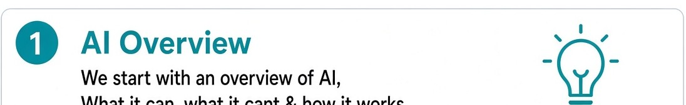
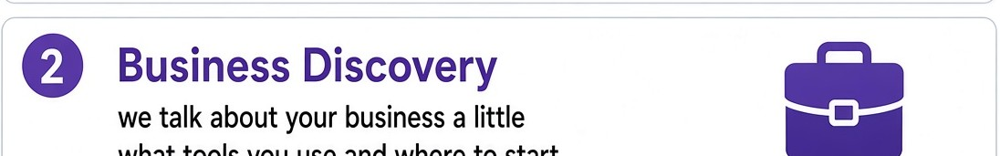
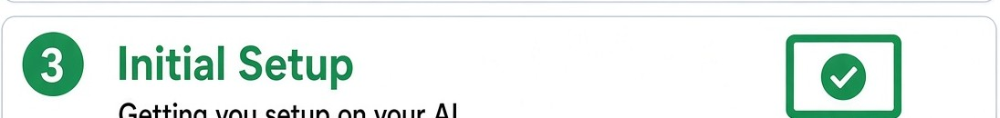
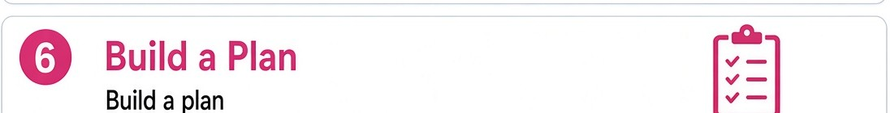
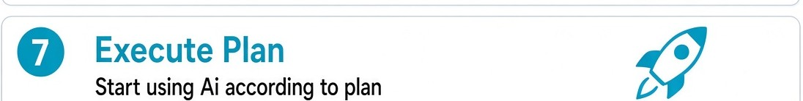

1
AI overview

We start with an overview of AI: what it can, what it cannot, and how it works.
1

We start with an overview of AI: what it can, what it cannot, and how it works.
2

We talk about the business a little: what tools you use, and where to start.
3

Getting you set up on your AI. One login, one place to work.
4
We go for low-effort tasks to show you what AI can do, on your own work.
5
Then we consult more in depth. The slower work that still eats the week.
6

We build a plan: what we will do, what we will not, and what done looks like.
7

You start using AI according to that plan, with me still in the loop for the first runs.
8
We determine the risks of using AI: wrong numbers, data you should not paste, a tool that sounds sure when it is not.
If one of those is eating the week, send an enquiry.